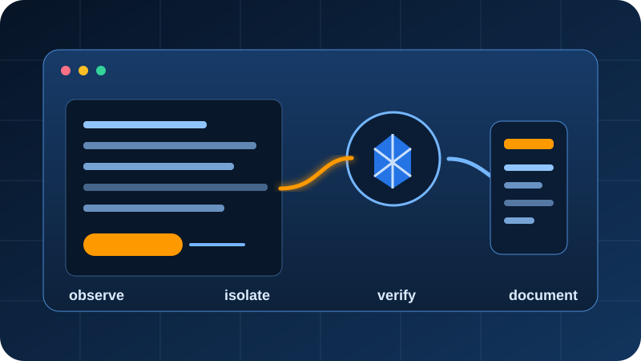

AWS Cloud Support Internship: What I Actually Practiced
The clearest written explanation of the training environment, troubleshooting workflow, serverless metadata capstone, and the exact production responsibilities I do not claim.
Read the internship article